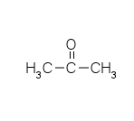

Chemical properties is properties of substances that can we can notice when the substance is react with other susbtances, chemical properties can’t be notice directly with out change or react the substance. Chemical properties are includes reactivity, chemical formula, chemical structure, and power of bond from some substances. Character some susbtances can decide the function of that substances, we can get some example like alumunium, we can found many alumunium material in our house because that things not easy to get rusty and very value for money to be house equipment.
Because alcohols can be oxidiled to form ketones , it follow that the reduction of ketons yield alcohols. Oxidation and reduction are opposite processes. Carbonyl compounds can be reduced with H2; this process is similar to reduction of alkene with H2 to form alkanes. Nickel or platinum metals catalyze the addition of H2 across the carbonyl double bond. In general, the reduction of ketones yield secondary alcohols. Other agent suc a lithium alumunium hydride (LiAlH4), or sodium borohydride (NaBH4), are reducing agent that accomplish the same reaction in the laboratory without the need for H2 gas.
Ketones can not be oxidized by mild oxidizing agent. Ketones give negative result with tollen's reagent, fehling's reagent, and benedict's solution.
cyanohydrin (alkyl alkane nitrile) are formed
Ketones react with saturated aqueous solution of sodium bisulphite (sodium hydrogen sulfonate) to form solid addition compounds.
Ketones react with Grignard reagent (RMgX) to give an addition product which can be hydrolysed with dilute acid to yeild a tertiary alcohols. See chapter about preparation of alcohols.
| Characteristic | Information |
|---|---|
| Chemical name | Acetone |
| Synonym(s) |
Dimethyl ketone 2-propanone beta-ketopropanone |
| Chemical structure |  |
| Chemical formula | C3H6O |